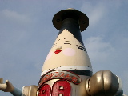
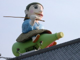
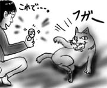
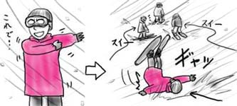
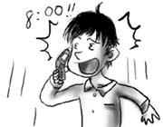
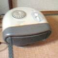
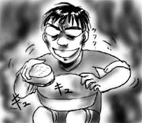
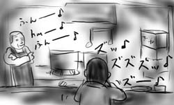
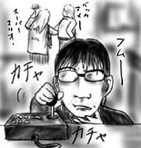

朝一で実家に帰ってきました．
大晦日の夜は実家友人宅に集まってくだを巻くのが通例なので，今年も友人と連れ立って酒を買いに出かけます．今年友人に連れて行かれたのは「明治城」なる酒屋でした．
駐車場にはおかめの顔をした巨大人形が手を振り回しながらそびえ立ち，屋根の上には頭部が酒瓶に置き換わった亀にまたがった浦島太郎が鎮座しています．

そして聞こえてくるのは浦島太郎の替え歌．"〜竜宮城に来てみれば〜 酒，酒，酒の酒づくし〜"．替え歌のバックでは巨大おかめ人形が手を振り回すギーギーという音が鳴り響いています．なんだこの空間は！
店内に入ると今度は苦渋の表情を浮かべたスキンヘッドの人形が酒を瓶ごとガブ飲みしている像が目に飛び込んで来ました．
この店は本気で商売をする気があるのか．
いよいよ最終日です．
チェックアウトは10時ですが，それを越えて駐車していると，駐車料としてまた1000円取られるので，初日から滑っていた車組は速攻で帰途につくことになっています．初日遅刻組は，半日ほど滑ってから電車で帰ります．
チェックアウト手続きをしている間，宿の飼い猫が足下にやってきました．かいぐりしようと撫でてみたのですが唸り声を上げて噛み付いてきます．誰が撫でても噛み付いてきて困っていたのですが，誰からともなく「500円入れたら愛想よくならん？」というアイデアが湧いてきました．二泊もしたため，宿の「金で解決システム」にいい感じで慣らされてきたようです．ありがとう，もう来ないよ．

チェックアウトしてからコインロッカーに荷物を放り込み，ゲレンデまで出かけたところ，昨日の吹雪が嘘のような好天でかなり楽しめました．半日しか滑れなかったのが悔やまれます．
東京まで戻って来た後，コミケ帰りのネット友人達と餃子を丸飲み大会．頼んでいた風虎通信の同人誌「宇宙の傑作機シリーズ ダイナソアX-20」を受け取ります．相変わらずの情報量に圧倒．素晴らしいなぁ．
朝に目覚め，今日こそ滑るぞと窓の外を見たところ，曇り空に雪がちらついていました．幸先良すぎ！(ドクロ)
朝飯は紅茶は飲み放題だったのですが，コーヒーがありません．コーヒー飲みたいなぁとキョロキョロしていたところ，柱に「完熟焙煎コーヒー 500円」の文字が！さすが！
朝の予感が的中し，ゲレンデは昼前からものすごい勢いで吹雪き始め，視界が真っ白に染まりました．ここぞとばかりにポケットから秘蔵のポンチョ(蛍光カラー)を取り出し，視界の悪い雪山でみんなの進路を照らす灯火となろうと思いましたが，派手に転んで置いて行かれました．

宿では使い捨てタオルと使い捨て歯ブラシが使えるのですが，今日は補充されていませんでした．二日間使い捨て歯ブラシを使わないとダメでしたか．昨日使って捨ててしまったため，今日の歯ブラシがありません．困ったなぁと宿をウロチョロしていると，歯ブラシ200円と書かれた自動販売機が！すごい！金で解決システムもここまで来ると立派です．
意を決して200円を投入したのですが，何も出てきませんでした．
待ち合わせをしていた友人からの電話でさわやかに目覚めました．「今どのへん？」
サーーッ(血の引く音)
というわけで集合時間まで爆睡していました．さわやかに目覚めちゃダメだった．かなりあせって飛び起き，謝りつつ次の特急券を買ってもらうように頼みます．「駅の時刻表だと562ページだから！」昨日切符を買った時の妙に細かい記憶だけが鮮明に思い出されます．友人もそんな数字いきなり言われても困ると思います．

結局，スキー場に到着した時には14時半を回っていたため，今日すべるのはあきらめました．早朝に車でスキー場入りを果たしていた友人達と合流してリフトの二日券を受け取ったものの，そのまま部屋へ直行してグースカ．また夢の世界へ旅立ちました．
宿となった「リゾートイン アルプ」は，チェックイン前に車を停めると1000円，チェックイン前にトイレを借りようとすると休憩料500円など，あらゆる付加サービスを全て金で解決するシステムの安宿でした．Webページがかなり騙しなので，興味のある方は検索してみることをお勧めします．個室暖房完備というようなことが書かれていますが，実態はフィルタに山ほどゴミが付着して温風の出が悪いこんな暖房器具が畳に置かれています．古っ！

飲食物の部屋への持ち込みもその50%を徴収されるようなのですが，知ったことじゃないので買い出した飲食物を押し入れに隠しました．飲み食いした後のゴミも一緒に隠したため，押し入れがちょっと酒くさく，そしてイカくさくなったのですが，気にしない方向で．
明日から大学友人とスキー旅行なので，しばらく更新が止まります．次の更新は大晦日になりそうです．
しかし，スキー旅行って個人的には，誘われない限りは行かない，絶対に自分からは言い出さないタイプのイベントの１つです．まぁ僕の場合はほとんどそうなのですが．
直前になって初めて「どこ行くんだっけ？」と大学友人メールを引っくり返し，電車の切符を買いに奔走するような体たらくです．一応切符は買えたけど，下車駅からスキー場までちゃんと行けるかどうか確証がありません．
こんなんで大丈夫か！
休みに入ったので，大掃除を敢行しました．
大掃除のメインイベントはやはり水回り．特に風呂場はその決戦場と言えるでしょう．大学入学時に買ったバスピカを前回ついに使いきったので(10年かかりました)，今回は新規購入したバスピカで挑みます．使いきるのはやっぱり10年後なのでしょうか(もっと頻繁に風呂掃除して下さい)．
最初のうちは，風呂場の排水溝の貞子髪を取り払ったり，タイルのカビを根こそぎ取り払ったり，浴槽の垢を落としたりしていたのですが，ふと気付くと洗面器をものすごい形相で磨いていました．力を込めて擦ると付着した垢やカビがピカピカと取れていくのを見るうちにプチトリップになってしまったようです．10年前のバスピカと違ってさすがに劣化していないので，みるみる汚れが取れて行くため，魅入られてしまったようです．妖刀と呼ばれる刀はその切れ味で使い手を魅入ってしまうのと同じです．僕にとっての村正はバスピカなのか．

水辺は隔世との境界なので危険がいっぱいです(間違い)．
会社を出るのが遅くなってしまったのでラーメン屋に入ったのですが，さすがに今日はそういう日(通称:サカルディ)なので客は僕だけでした．
ラーメン屋の大将が歌う鼻歌が店内に鳴り響き，麺をすする僕と絶妙のハーモニーを奏でます．これが僕らのクリスマス・ソング．

でも，大将．店の奥で僕が食べ終わるのを腕組みしてじっと観察するのはやめてください．
岩槻に万代書店という中古ショップが出来たのでちょっと足を伸ばしてみました．看板には「コミック DVD CD ゲーム おもちゃ 釣具」という文字が踊ります．なんで釣具…
ジグザグに設置された棚には，ファミコンのカートリッジやフィギュアや食玩などが吊り下がっています．書店という割に活字は全く無く，コミックもしょぼい品揃えです．本には期待できそうもないので，逆に充実しているゲームコーナーへと向かい，サターンの掘り出し物でも探そうと思ったのですが，シャイニング・ウィズダムが30本ほど棚を占領しているような状態で，こちらもさっぱりです．
しかし予想外にゲームのコントローラが充実しており，サターン用ホリスティックが100円という特価で売られています．現在使っているホリスティックのバックアップとしていいかもなぁ，と座り込んでスティックの状態を確かめている姿は，後ろで「ねー，スーパーマリオ買おうよー」「バッカ，オメー，ファミコンねーじゃん」「えーファミコンも買わないとダメなのー？」と言っているカップルには珍奇なものに映ったでしょうな！

結局荷物になるので買わなかったのですが，コネクタの色がどれも僕が所有している物と違っていたのが気になります．黒色コネクタって後期型？(聞いても…)
今日は，暗黒同期の家に遊びに行ってきました．
彼が結婚してから，一度も家まで遊びに行ったことがなかったのですが，今回「友人から訳ありの食品が届いて食べきれないから是非遊びに来てくれ」というので，いい機会だからと出かけてきました．誘いを受けた時はてっきり魚介系だと思ったのですが，確認すると「違います．とにかく来て見てください」などというのです．気にならないわけがないじゃないですか．
というわけで僕を出迎えてくれたのは，冷凍庫にみつしりと詰め込まれた「中村屋の肉まん」でした．
３人で肉まんをムシャムシャと食べながら，もしこれで死んだら灰羽ネームは「ニク」とか「マン」とかになるに違いない…という話をしていました．彼の家はオールドホームというには新しくて奇麗でしたけどね．さすが中村屋謹製なだけあってカレーまんの秀逸さが頭一つ抜き出ていたと思います．

後は，彼が撮り貯めたアニメを見たり，ゲームをしたり，中高生の土曜日のような午後を過ごしていました．そして中高生らしく「ミズグチくん，せっかくだから夕御飯食べていきなさい」みたいに誘われて「あ，なんかすいません」と言いながら夕食を美味しくいただき，「ミズグチくん，たくさんあるから，これ，お母さんに持って帰りなさい」みたいに「中村屋の肉まん」のフルコースパックを持たせてもらいました．
なんだか，こちらからお邪魔したのにいろいろいただいて申し訳ない気持ちになりながら帰途についたのですが，このまま中高生土曜日を満喫するなら，家に着いた途端に「あんたいつまで遊んでるの！ずっといたら○○くん家も迷惑でしょ！」と怒られないとダメなのですが，あいにく一人暮らしでそれは不可能です．
当然，引き止めていた側も「あんたもいつまでもいつまでもゲームして！引き止められるミズグチくんだって迷惑でしょ！」と怒られないとダメなのですが，これは可能なので是非実践していただきたい．